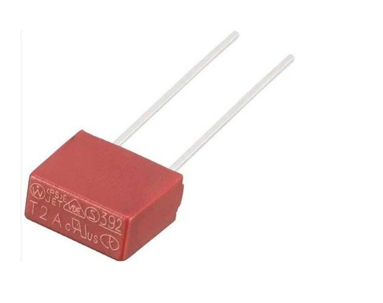
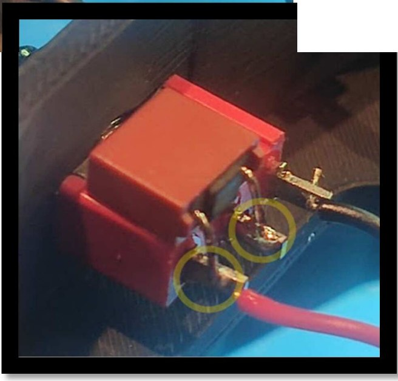
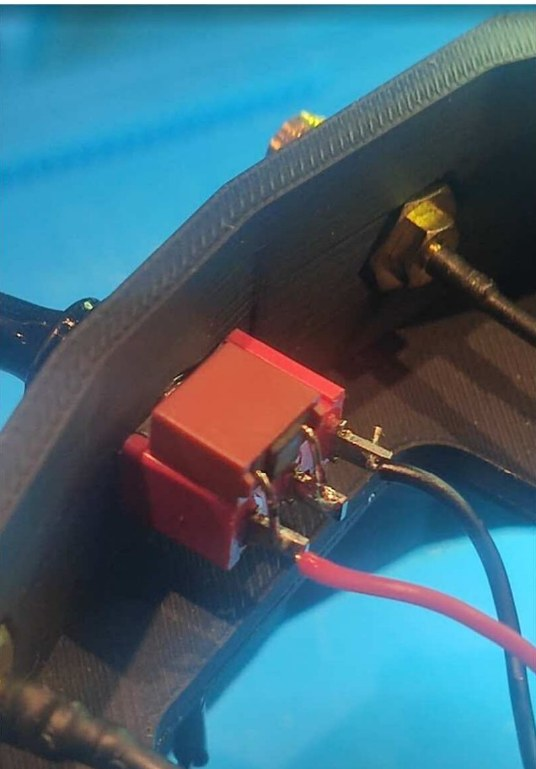

Soldering is easier before the switch goes into the case.
Recommended: solder a 2 A fast-blow fuse across pin 1 and pin 2. Use a square TE5 fuse (Littelfuse 391 series, 2 A). Automotive blade fuses do not fit. No tier includes a fuse. If you can, fit the fuse on the UPS+ wire near the UPS instead.
Solder the switch cable: red wire on pin 1, black wire on pin 3. Without a fuse, solder the wires to pin 1 and pin 2.

Square TE5 shape. This one is a 392 (T = time-lag). Buy the 391 (fast-blow).

Fuse soldered on the switch

Wired switch, seen from inside
In the case: mount and tighten
Run the nut to the bottom of the switch thread. Then fit the tab washer with its tab bent flat.
Push the switch through the cutout from inside. Screw the rubber boot on from outside.
Tighten the inside nut against the wall until the switch sits flush and cannot turn. Fingers cannot get it tight enough. Use one of these:
Slim spanner (best if you have wrist or hand problems). Turn the inside nut with a thin open-end spanner. Stop when the switch no longer turns. The case is plastic, so do not overtighten.
Crush washer. Fit the crush washer in place of the tab washer. Tighten with firm force and watch the washer. Stop when it is partly crushed, not flat. The squeezed washer acts as a spring. It keeps pushing on the nut, so the nut does not shake loose.
Flip the switch a few times. It should move smoothly and the body should not turn.